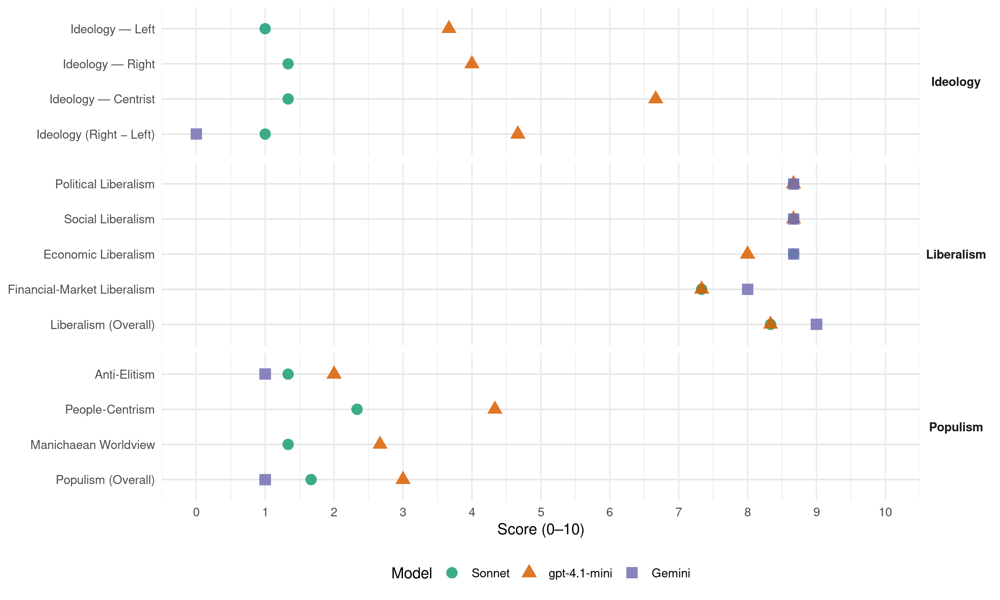

openVLD (Belgium, 2019)
manifesto_id 21421_201905
Get full text: This site shows derived annotations and short verbatim quotes only. The full manifesto text is © Manifesto Project / WZB — obtain it via manifesto-project.wzb.eu using the manifesto_id above.
Headline scores
| Dimension | Sonnet | gpt-4.1-mini | Gemini |
|---|---|---|---|
| Populism (Overall) | 1.7 | 3.0 | 1.0 |
| Anti-Elitism | 1.3 | 2.0 | 1.0 |
| People-Centrism | 2.3 | 4.3 | – |
| Manichaean Worldview | 1.3 | 2.7 | – |
| Ideology (Right − Left) | 1.0 | 4.7 | 0.0 |
| Liberalism (Overall) | 8.3 | 8.3 | 9.0 |
| Political Liberalism | 8.7 | 8.7 | 8.7 |
| Social Liberalism | 8.7 | 8.7 | 8.7 |
| Economic Liberalism | 8.7 | 8.0 | 8.7 |
| Financial-Market Liberalism | 7.3 | 7.3 | 8.0 |
Evidence per dimension
Economic Liberalism
Gemini · score 9.0 · verified · chunk 1
“lage en eenvoudige vennootschapsbelasting”
vaste werknemers. Een lage en eenvoudige vennootschapsbelasting Ook de belastingen voor bedrijven werden in de
Gemini · score 8.0 · verified · chunk 2
“aanbesteding op de markt gebracht”
Dit wordt door middel van een aanbesteding op de markt gebracht. Voor scholieren en studenten wordt
Gemini · score 9.0 · verified · chunk 3
“internationale vrijhandel. Europa is het grootste”
moet Europa een voortrekker blijven op het vlak van internationale vrijhandel. Europa is het grootste handelsblok ter wereld.
gpt-4.1-mini · score 9.0 · verified · chunk 1
“We pleiten voor lage en eenvoudige belastingen. Een vrij erfrecht”
Een vrij erfrecht We pleiten voor lage en eenvoudige belastingen. Een vrij erfrecht, betekent dat de fiscus je keuze niet kan afstraffen door onredelijke tarieven. De afgelopen jaren werd de erfbelasting onder een liberale minister van Financiën hervormd en verlaagd.
gpt-4.1-mini · score 7.0 · verified · chunk 2
“De Europese eenheidsmarkt geeft onze bedrijven de nodige schaal om internationaal competitief te zijn”
We kiezen voluit voor een sterk en efficiënt Europa, niet vanuit een dogmatische benadering maar vanuit het gezond verstand: heel wat uitdagingen kunnen veel efficiënter worden aangepakt op het Europees niveau. De Europese eenheidsmarkt geeft onze bedrijven de nodige schaal om internationaal competitief te zijn, want onze nationale markt is daarvoor te klein.
gpt-4.1-mini · score 8.0 · verified · chunk 3
“De Europese eenheidsmarkt geeft onze bedrijven de nodige schaal om internationaal competitief te zijn”
We kiezen voluit voor een sterk en efficiënt Europa, niet vanuit een dogmatische benadering maar vanuit het gezond verstand: heel wat uitdagingen kunnen veel efficiënter worden aangepakt op het Europees niveau. De Europese eenheidsmarkt geeft onze bedrijven de nodige schaal om internationaal competitief te zijn, want onze nationale markt is daarvoor te klein.
Sonnet · score 9.0 · verified · chunk 1
“belastingen voor wie werkt opnieuw verlagen”
We willen de belastingen voor wie werkt en voor wie gewerkt heeft opnieuw verlagen met vijf miljard euro.
Sonnet · score 8.0 · verified · chunk 2
“internationale vrijhandel”
In tijden van protectionisme en handelsoorlogen moet Europa een voortrekker blijven op het vlak van internationale vrijhandel.
Sonnet · score 9.0 · verified · chunk 3
“voortrekker blijven op het vlak van internationale vrijhandel”
In tijden van protectionisme en handelsoorlogen moet Europa een voortrekker blijven op het vlak van internationale vrijhandel.
Financial-Market Liberalism
Gemini · score 8.0 · verified · chunk 2
“samenwerking tussen de inlichtingen- en veiligheidsdiensten enerzijds en de banksector”
dient een kader uitgewerkt te worden voor een intensere samenwerking tussen de inlichtingen- en veiligheidsdiensten enerzijds en de banksector anderzijds. Zo moeten politie en
Gemini · score 8.0 · verified · chunk 3
“één Europese minister van Financiën”
homogene bevoegd-heidspakketten. Zo moet er bijvoorbeeld één Europese minister van Financiën komen die beschikt over een Europese schatkist
gpt-4.1-mini · score 8.0 · verified · chunk 1
“We verlagen de energiefactuur door de verdoken belastingen eruit te halen.”
Een netto-elektriciteitsfactuur De energie-omslag zal rendabel zijn of helemaal niet zijn. Belangrijk in dit opzicht is dat we alle kosten die niet met energie te maken hebben uit de elektriciteitsfactuur van mensen halen. Meer dan een derde van de elektriciteitsfactuur gaat namelijk naar de distributienettarieven.
gpt-4.1-mini · score 7.0 · verified · chunk 2
“In de opsporing en bestrijding van terrorisme is het vroegtijdig detecteren van verdachte financiële transacties, hoe klein ook, essentieel”
In de opsporing en bestrijding van terrorisme is het vroegtijdig detecteren van verdachte financiële transacties, hoe klein ook, essentieel. Terrorisme kan immers niet zonder financiering. Naar het voorbeeld van andere landen dient een kader uitgewerkt te worden voor een intensere samenwerking tussen de inlichtingen- en veiligheidsdiensten enerzijds en de banksector anderzijds.
gpt-4.1-mini · score 7.0 · verified · chunk 3
“werken we aan een systeem van screening van buitenlandse investeringen in kritieke infrastructuur”
En ook onze veiligheid en intellectuele eigendom mogen niet in het gedrang komen. Daarom krijgen Chinese of Russische technologiebedrijven niet zomaar vrij spel op onze markt en werken we aan een systeem van screening van buitenlandse investeringen in kritieke infrastructuur.
Sonnet · score 8.0 · verified · chunk 1
“stabiel wettelijk kader is dan ook essentieel”
In de tweede en de derde pensioenpijler (het pensioensparen) staat de lange termijn centraal. Een stabiel wettelijk kader is dan ook essentieel, zowel voor de spaarders als voor de werkgevers en de aanbieders van aanvullende pensioenplannen en pensioenspaarproducten.
Sonnet · score 7.0 · verified · chunk 2
“verdachte financiële transacties”
het vroegtijdig detecteren van verdachte financiële transacties, hoe klein ook, essentieel. Terrorisme kan immers niet zonder financiering.
Sonnet · score 7.0 · verified · chunk 3
“één Europese minister van Financiën”
Zo moet er bijvoorbeeld één Europese minister van Financiën komen die beschikt over een Europese schatkist die de euro en de Europese economie kan beschermen tegen buitenlandse schokken.
Political Liberalism
Gemini · score 8.0 · verified · chunk 1
“Mensen moeten meer vrijheid krijgen”
Door zo weinig mogelijk regeltjes op te leggen. Mensen moeten meer vrijheid krijgen om hun eigen keuzes te maken, initiatief te
Gemini · score 9.0 · verified · chunk 2
“fundamentele normen uit de grondwet”
iedereen wel onze wetten en spelregels respecteren. Dat zijn onze fundamentele normen uit de grondwet: de vrijheid van meningsuiting
Gemini · score 9.0 · verified · chunk 3
“mensenrechten, de rechtstaat en de gelijkheid”
verantwoordelijkheid met zich mee, om te strijden voor de universele mensenrechten, de rechtstaat en de gelijkheid tussen vrouwen en mannen.
gpt-4.1-mini · score 9.0 · verified · chunk 1
“Vrijheid is onze basiswaarde Het is een recht en een opdracht voor elk individu”
Ons kompas bij onderhandelingen en beslissingen zijn vijf duidelijke principes waaraan beslissingen en standpunten van Open Vld moeten voldoen. Vrijheid is onze basiswaarde Het is een recht en een opdracht voor elk individu die iets van het leven wil maken.
gpt-4.1-mini · score 8.0 · verified · chunk 2
“de individuele vrijheid, scheiding tussen kerk en staat, de gelijkheid van man en vrouw, de vrijheid van meningsuiting, democratische besluitvorming, de rechtstaat”
In een diverse samenleving moeten we duidelijk de fundamentele waarden benoemen en verdedigen waarop onze samenleving stoelt: de individuele vrijheid, scheiding tussen kerk en staat, de gelijkheid van man en vrouw, de vrijheid van meningsuiting, democratische besluitvorming, de rechtsstaat en de voorrang van de wet op religieuze regels.
gpt-4.1-mini · score 9.0 · verified · chunk 3
“om te strijden voor de universele mensenrechten, de rechtstaat en de gelijkheid tussen vrouwen en mannen”
Sinds begin dit jaar is België lid van de Veiligheidsraad van de Verenigde Naties. Die verkiezing was een blijk van vertrouwen van de wereld. Tegelijk brengt het een bijzondere verantwoordelijkheid met zich mee, om te strijden voor de universele mensenrechten, de rechtstaat en de gelijkheid tussen vrouwen en mannen.
Sonnet · score 8.0 · verified · chunk 1
“open samenleving, economisch en maatschappelijk”
Wij kiezen meer dan ooit voor de open samenleving, economisch en maatschappelijk. We koesteren onze buurt, onze stad of regio maar begrijpen dat we de problemen vandaag nooit alleen oplossen.
Sonnet · score 9.0 · verified · chunk 2
“democratische waarden verdedigt”
voeren we een ambitieus buitenlands beleid, dat zowel onze belangen als de democratische waarden verdedigt. Want in een gefragmenteerde wereld
Sonnet · score 9.0 · verified · chunk 3
“liberale democratie en de Europese rechtsstaat”
De liberale democratie en de Europese rechtsstaat staan immers onder grote druk van extremisten en populisten als Orban, Salvini en Kaczynski.
Liberalism (Overall)
Gemini · score 9.0 · verified · chunk 1
“Vrijheid is onze basiswaarde”
principes waaraan beslissingen en standpunten van Open Vld moeten voldoen. Vrijheid is onze basiswaarde Het is een recht en een opdracht voor elk
Gemini · score 9.0 · verified · chunk 2
“vrijheid en openheid steeds onze leidraden”
redelijke manier om met vragen tot aanpassing, waarbij vrijheid en openheid steeds onze leidraden zijn. We kiezen voor een
Gemini · score 9.0 · verified · chunk 3
“mensenrechten, de rechtstaat en de gelijkheid”
verantwoordelijkheid met zich mee, om te strijden voor de universele mensenrechten, de rechtstaat en de gelijkheid tussen vrouwen en mannen.
gpt-4.1-mini · score 9.0 · verified · chunk 1
“Vrijheid is onze basiswaarde Het is een recht en een opdracht voor elk individu”
Ons kompas bij onderhandelingen en beslissingen zijn vijf duidelijke principes waaraan beslissingen en standpunten van Open Vld moeten voldoen. Vrijheid is onze basiswaarde Het is een recht en een opdracht voor elk individu die iets van het leven wil maken.
gpt-4.1-mini · score 8.0 · verified · chunk 2
“de individuele vrijheid, scheiding tussen kerk en staat, de gelijkheid van man en vrouw, de vrijheid van meningsuiting, democratische besluitvorming, de rechtstaat”
In een diverse samenleving moeten we duidelijk de fundamentele waarden benoemen en verdedigen waarop onze samenleving stoelt: de individuele vrijheid, scheiding tussen kerk en staat, de gelijkheid van man en vrouw, de vrijheid van meningsuiting, democratische besluitvorming, de rechtsstaat en de voorrang van de wet op religieuze regels.
gpt-4.1-mini · score 8.0 · verified · chunk 3
“om te strijden voor de universele mensenrechten, de rechtstaat en de gelijkheid tussen vrouwen en mannen”
Sinds begin dit jaar is België lid van de Veiligheidsraad van de Verenigde Naties. Die verkiezing was een blijk van vertrouwen van de wereld. Tegelijk brengt het een bijzondere verantwoordelijkheid met zich mee, om te strijden voor de universele mensenrechten, de rechtstaat en de gelijkheid tussen vrouwen en mannen.
Sonnet · score 9.0 · verified · chunk 1
“Vrijheid is onze basiswaarde”
Vrijheid is onze basiswaarde. Het is een recht en een opdracht voor elk individu die iets van het leven wil maken.
Sonnet · score 8.0 · verified · chunk 2
“democratische waarden verdedigt”
voeren we een ambitieus buitenlands beleid, dat zowel onze belangen als de democratische waarden verdedigt.
Sonnet · score 8.0 · verified · chunk 3
“liberale democratieën staan onder druk”
Onze liberale democratieën staan onder druk. Door het religieuze fundamentalisme dat onze samenleving binnen sijpelt.
Anti-Elitism
Gemini · score 1.0 · verified · chunk 3
“extremisten en populisten als Orban”
rechtsstaat staan immers onder grote druk van extremisten en populisten als Orban, Salvini en Kaczynski.
gpt-4.1-mini · score 2.0 · verified · chunk 1
“Wij passen voor partijen die het werk van de voorbije jaren willen terugdraaien.”
We moeten verder doen. Middelmaat is geen optie. We willen ons land structureel op orde zetten. Wij passen voor partijen die het werk van de voorbije jaren willen terugdraaien. We kijken vooruit en hebben daarbij duidelijke doelen voor ogen.
gpt-4.1-mini · score 2.0 · verified · chunk 2
“tegen hokjesdenken en segregatie”
Veiligheid begint bij preventie Een sterk veiligheidsbeleid begint altijd bij een goed uitgebouwd preventiebeleid. Er is een belangrijke rol weggelegd voor de steden en gemeenten. Een verdeelde samenleving is een onveilige samenleving. We moeten dus strijden tegen hokjesdenken en segregatie. Om goed te kunnen samenleven, moet iedereen wel onze wetten en spelregels respecteren.
gpt-4.1-mini · score 2.0 · verified · chunk 3
“nationalistische en antidemocratische strekkingen die niet terugschrikken voor fake news”
Onze liberale democratieën staan onder druk. Door het religieuze fundamentalisme dat onze samenleving binnen sijpelt. Maar ook door nationalistische en antidemocratische strekkingen die niet terugschrikken voor fake news. Als liberalen kunnen we hier niet aan toegeven.
Sonnet · score 1.0 · verified · chunk 1
“multinationals door de fiscale mazen van het net kruipen”
We maken komaf met deloyale concurrentie tussen lidstaten én verhinderen we dat multinationals door de fiscale mazen van het net kruipen.
Sonnet · score 2.0 · verified · chunk 2
“hebzuchtige bankiers en speculanten”
Twee neergehaalde wolkenkrabbers in New York, hebzuchtige bankiers en speculanten die het financiële systeem aan de rand van de afgrond brachten.
Sonnet · score 1.0 · verified · chunk 3
“populisten als Orban, Salvini en Kaczynski”
De liberale democratie en de Europese rechtsstaat staan immers onder grote druk van extremisten en populisten als Orban, Salvini en Kaczynski.
Ideology — Centrist
gpt-4.1-mini · score 7.0 · verified · chunk 1
“Open Vld is dé partij voor iedereen die werkt of gewerkt heeft om ons land beter te maken.”
Vooraf Open Vld is dé partij voor iedereen die werkt of gewerkt heeft om ons land beter te maken. Op uw job, in een jeugdbeweging, als leerkracht, verpleger, ondernemer, vrijwilliger, mantelzorger… Het zijn allemaal mensen die ervoor zorgen dat het in ons land goed leven is.
gpt-4.1-mini · score 6.0 · verified · chunk 2
“Iedereen bepaalt zelf zijn of haar eigen identiteit”
We wijzen het denken dat mensen reduceert tot één identiteit, af. De identiteit van mensen is gelaagd. Iedereen bepaalt zelf zijn of haar eigen identiteit. Je kan hier zijn wie je wil, zeggen wat je wil, worden wat je wil. Al die unieke mensen bij elkaar maken een diverse samenleving.
gpt-4.1-mini · score 7.0 · verified · chunk 3
“We voeren een ambitieus buitenlands beleid, dat zowel onze belangen als de democratische waarden verdedigt”
Angst is een slechte raadgever. Daarom voeren we een ambitieus buitenlands beleid, dat zowel onze belangen als de democratische waarden verdedigt. Want in een gefragmenteerde wereld waar de wet van de sterkste heerst, heeft een land als België veel te verliezen.
Sonnet · score 2.0 · verified · chunk 1
“We laten niemand achter”
We werken graag samen en laten niemand achter. Vooruit met ons land!
Sonnet · score 1.0 · verified · chunk 2
“burger als motor van de verandering”
Open Vld de bouwshift op een maatschappelijke dynamische manier, met de burger als motor van de verandering
Sonnet · score 1.0 · verified · chunk 3
“strenge maar rechtvaardige beleid rond asiel”
Dat is de kern van het strenge maar rechtvaardige beleid rond asiel en migratie dat we verder willen blijven voeren.
Ideology — Left
gpt-4.1-mini · score 3.0 · verified · chunk 1
“We laten niemand achter. Optimisme is onze ingesteldheid Precies omdat we vertrouwen in vrije mensen”
We werken graag samen en laten niemand achter. Vooruit met ons land! Over onze principes en programma In een verkiezingsprogramma lees je praktische voorstellen en oplossingen voor problemen. Maar de realiteit van het besturen van een land is complexer en meer gevarieerd dan wij in een programma kunnen voorzien.
gpt-4.1-mini · score 4.0 · verified · chunk 2
“Armoedebeleid moet een springplank zijn, geen uitkeringsmodel dat mensen in de armoede verankert”
Armoede Het liberalisme gelooft in de kracht van elk individu. Daarom ijveren we voor emancipatie en gelijke startkansen zodat iedereen zich kan ontplooien op basis van zijn of haar talenten en capaciteiten. Armoedebeleid moet een springplank zijn, geen uitkeringsmodel dat mensen in de armoede verankert. Een job beperkt het armoederisico tot minder dan 5%.
gpt-4.1-mini · score 4.0 · verified · chunk 3
“Vrijhandel mag niet leiden tot ecologische, fiscale of sociale dumping!”
Van onze handelspartners verwachten we dat zij de klimaatdoelstellingen nastreven en de internationale normen respecteren. Vrijhandel mag niet leiden tot ecologische, fiscale of sociale dumping! Integendeel, vrije en eerlijke handel betekent een gelijk speelveld met minimumstandaarden die door iedereen worden gerespecteerd.
Sonnet · score 1.0 · verified · chunk 1
“multinationals door de fiscale mazen van het net kruipen”
verhinderen we dat multinationals door de fiscale mazen van het net kruipen.
Sonnet · score 1.0 · verified · chunk 2
“gelijke startkansen zodat iedereen zich kan ontplooien”
Armoedebeleid moet een springplank zijn, geen uitkeringsmodel dat mensen in de armoede verankert. gelijke startkansen zodat iedereen zich kan ontplooien op basis van zijn of haar talenten
Sonnet · score 1.0 · verified · chunk 3
“Multinationals mogen niet aan elke vorm van belasting ontsnappen”
Zo sluiten we geen handelsakkoorden af met belastingparadijzen. Multinationals mogen niet aan elke vorm van belasting ontsnappen.
Ideology (Right − Left)
Gemini · score 0.0 · verified · chunk 3
“extremisten en populisten als Orban”
rechtsstaat staan immers onder grote druk van extremisten en populisten als Orban, Salvini en Kaczynski.
gpt-4.1-mini · score 5.0 · verified · chunk 1
“Wij passen voor partijen die het werk van de voorbije jaren willen terugdraaien.”
We moeten verder doen. Middelmaat is geen optie. We willen ons land structureel op orde zetten. Wij passen voor partijen die het werk van de voorbije jaren willen terugdraaien. We kijken vooruit en hebben daarbij duidelijke doelen voor ogen.
gpt-4.1-mini · score 4.0 · verified · chunk 2
“tegen hokjesdenken en segregatie”
Veiligheid begint bij preventie Een sterk veiligheidsbeleid begint altijd bij een goed uitgebouwd preventiebeleid. Er is een belangrijke rol weggelegd voor de steden en gemeenten. Een verdeelde samenleving is een onveilige samenleving. We moeten dus strijden tegen hokjesdenken en segregatie. Om goed te kunnen samenleven, moet iedereen wel onze wetten en spelregels respecteren.
gpt-4.1-mini · score 5.0 · verified · chunk 3
“Onze liberale democratieën staan onder druk. Door het religieuze fundamentalisme”
Onze liberale democratieën staan onder druk. Door het religieuze fundamentalisme dat onze samenleving binnen sijpelt. Maar ook door nationalistische en antidemocratische strekkingen die niet terugschrikken voor fake news. Als liberalen kunnen we hier niet aan toegeven.
Sonnet · score 1.0 · verified · chunk 1
“iedereen die werkt of gewerkt heeft”
Open Vld is dé partij voor iedereen die werkt of gewerkt heeft om ons land beter te maken.
Sonnet · score 1.0 · verified · chunk 2
“hebzuchtige bankiers en speculanten”
hebzuchtige bankiers en speculanten die het financiële systeem aan de rand van de afgrond brachten. Trump, de Brexit.
Sonnet · score 1.0 · verified · chunk 3
“populisten als Orban, Salvini en Kaczynski”
De liberale democratie en de Europese rechtsstaat staan immers onder grote druk van extremisten en populisten als Orban, Salvini en Kaczynski.
Ideology — Right
gpt-4.1-mini · score 3.0 · verified · chunk 2
“We moeten dus strijden tegen hokjesdenken en segregatie”
Veiligheid begint bij preventie Een sterk veiligheidsbeleid begint altijd bij een goed uitgebouwd preventiebeleid. Er is een belangrijke rol weggelegd voor de steden en gemeenten. Een verdeelde samenleving is een onveilige samenleving. We moeten dus strijden tegen hokjesdenken en segregatie. Om goed te kunnen samenleven, moet iedereen wel onze wetten en spelregels respecteren.
gpt-4.1-mini · score 5.0 · verified · chunk 3
“We treden hard op tegen illegale migratie, mensenhandel en mensensmokkel”
We staan open voor wie bescherming zoekt en voor wie een bijdrage kan leveren aan onze samenleving en onze welvaart. Maar we treden hard op tegen illegale migratie, mensenhandel en mensensmokkel. En we zorgen dat we weten wie er op ons grondgebied verblijft.
Sonnet · score 1.0 · verified · chunk 1
“ambitieuze buitenlandse ondernemers aan via start-up-visa”
Via het immigratiebeleid trekken we daarenboven ambitieuze buitenlandse ondernemers aan via start-up-visa en scale-up-visa.
Sonnet · score 1.0 · verified · chunk 2
“grenzen sluiten en muren bouwen”
willen doemdenkers dat we ons op onszelf terugplooien. Dat we de grenzen sluiten en muren bouwen. Tegen migranten — wat een illusie!
Sonnet · score 2.0 · verified · chunk 3
“hard op tegen illegale migratie”
Maar we treden hard op tegen illegale migratie, mensenhandel en mensensmokkel.
Manichaean Worldview
gpt-4.1-mini · score 3.0 · verified · chunk 1
“We laten niemand achter. Optimisme is onze ingesteldheid Precies omdat we vertrouwen in vrije mensen”
We werken graag samen en laten niemand achter. Vooruit met ons land! Over onze principes en programma In een verkiezingsprogramma lees je praktische voorstellen en oplossingen voor problemen. Maar de realiteit van het besturen van een land is complexer en meer gevarieerd dan wij in een programma kunnen voorzien.
gpt-4.1-mini · score 2.0 · verified · chunk 2
“De wet van de sterkste, waarvan de mensen onderaan de sociale ladder het grootste slachtoffer zijn”
Een veilig land. Zonder veiligheid is er geen vrijheid. Dan geldt het recht van de jungle, de wet van de sterkste, waarvan de mensen onderaan de sociale ladder het grootste slachtoffer zijn. Een onveilige samenleving duwt hen nog dieper en vormt een rem op de opwaartse sociale mobiliteit die wij liberalen zo belangrijk vinden.
gpt-4.1-mini · score 3.0 · verified · chunk 3
“Onze liberale democratieën staan onder druk. Door het religieuze fundamentalisme”
Onze liberale democratieën staan onder druk. Door het religieuze fundamentalisme dat onze samenleving binnen sijpelt. Maar ook door nationalistische en antidemocratische strekkingen die niet terugschrikken voor fake news. Als liberalen kunnen we hier niet aan toegeven.
Sonnet · score 1.0 · verified · chunk 1
“de minderheid die niet mee wil”
we moeten ook streng zijn voor de minderheid die niet mee wil.
Sonnet · score 2.0 · verified · chunk 2
“Angst is een slechte raadgever”
Wat een illusie! De opwarming van de aarde, de migratiestromen en de terroristische dreiging stoppen niet aan onze grens. Angst is een slechte raadgever.
Sonnet · score 1.0 · verified · chunk 3
“doemdenkers dat we ons op onszelf terugplooien”
Nu de wereld onvoorspelbaarder wordt, willen doemdenkers dat we ons op onszelf terugplooien.
People-Centrism
gpt-4.1-mini · score 7.0 · verified · chunk 1
“Open Vld is dé partij voor iedereen die werkt of gewerkt heeft om ons land beter te maken.”
Vooraf Open Vld is dé partij voor iedereen die werkt of gewerkt heeft om ons land beter te maken. Op uw job, in een jeugdbeweging, als leerkracht, verpleger, ondernemer, vrijwilliger, mantelzorger… Het zijn allemaal mensen die ervoor zorgen dat het in ons land goed leven is.
gpt-4.1-mini · score 3.0 · verified · chunk 2
“Iedereen bepaalt zelf zijn of haar eigen identiteit”
We wijzen het denken dat mensen reduceert tot één identiteit, af. De identiteit van mensen is gelaagd. Iedereen bepaalt zelf zijn of haar eigen identiteit. Je kan hier zijn wie je wil, zeggen wat je wil, worden wat je wil. Al die unieke mensen bij elkaar maken een diverse samenleving.
gpt-4.1-mini · score 3.0 · verified · chunk 3
“Wie denkt dat we het op ons eentje kunnen oplossen, die vergist zich schromelijk”
Er is niet minder maar meer internationale samenwerking nodig. Wie denkt dat we het op ons eentje kunnen oplossen, die vergist zich schromelijk. Angst is een slechte raadgever. Daarom voeren we een ambitieus buitenlands beleid, dat zowel onze belangen als de democratische waarden verdedigt.
Sonnet · score 3.0 · verified · chunk 1
“iedereen die werkt of gewerkt heeft”
Open Vld is dé partij voor iedereen die werkt of gewerkt heeft om ons land beter te maken.
Sonnet · score 2.0 · verified · chunk 2
“burger als motor van de verandering”
Open Vld de bouwshift op een maatschappelijke dynamische manier, met de burger als motor van de verandering, én met een voldoende groot draagvlak
Sonnet · score 2.0 · verified · chunk 3
“onze welvaart en onze samenleving”
Een opengrenzenbeleid heeft catastrofale gevolgen voor onze welvaart en onze samenleving. Daarom maken we regels en passen we die toe.
Populism (Overall)
Gemini · score 1.0 · verified · chunk 3
“extremisten en populisten als Orban”
rechtsstaat staan immers onder grote druk van extremisten en populisten als Orban, Salvini en Kaczynski.
gpt-4.1-mini · score 4.0 · verified · chunk 1
“Wij passen voor partijen die het werk van de voorbije jaren willen terugdraaien.”
We moeten verder doen. Middelmaat is geen optie. We willen ons land structureel op orde zetten. Wij passen voor partijen die het werk van de voorbije jaren willen terugdraaien. We kijken vooruit en hebben daarbij duidelijke doelen voor ogen.
gpt-4.1-mini · score 2.0 · verified · chunk 2
“tegen hokjesdenken en segregatie”
Veiligheid begint bij preventie Een sterk veiligheidsbeleid begint altijd bij een goed uitgebouwd preventiebeleid. Er is een belangrijke rol weggelegd voor de steden en gemeenten. Een verdeelde samenleving is een onveilige samenleving. We moeten dus strijden tegen hokjesdenken en segregatie. Om goed te kunnen samenleven, moet iedereen wel onze wetten en spelregels respecteren.
gpt-4.1-mini · score 3.0 · verified · chunk 3
“Onze liberale democratieën staan onder druk. Door het religieuze fundamentalisme”
Onze liberale democratieën staan onder druk. Door het religieuze fundamentalisme dat onze samenleving binnen sijpelt. Maar ook door nationalistische en antidemocratische strekkingen die niet terugschrikken voor fake news. Als liberalen kunnen we hier niet aan toegeven.
Sonnet · score 2.0 · verified · chunk 1
“iedereen die werkt of gewerkt heeft”
Open Vld is dé partij voor iedereen die werkt of gewerkt heeft om ons land beter te maken.
Sonnet · score 2.0 · verified · chunk 2
“hebzuchtige bankiers en speculanten”
Twee neergehaalde wolkenkrabbers in New York, hebzuchtige bankiers en speculanten die het financiële systeem aan de rand van de afgrond brachten.
Sonnet · score 1.0 · verified · chunk 3
“populisten als Orban, Salvini en Kaczynski”
De liberale democratie en de Europese rechtsstaat staan immers onder grote druk van extremisten en populisten als Orban, Salvini en Kaczynski.
Social Liberalism